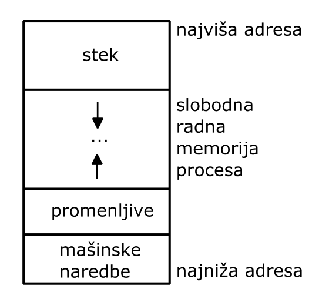
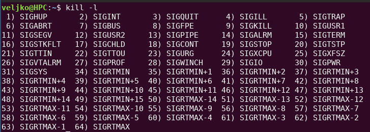
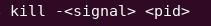
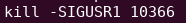
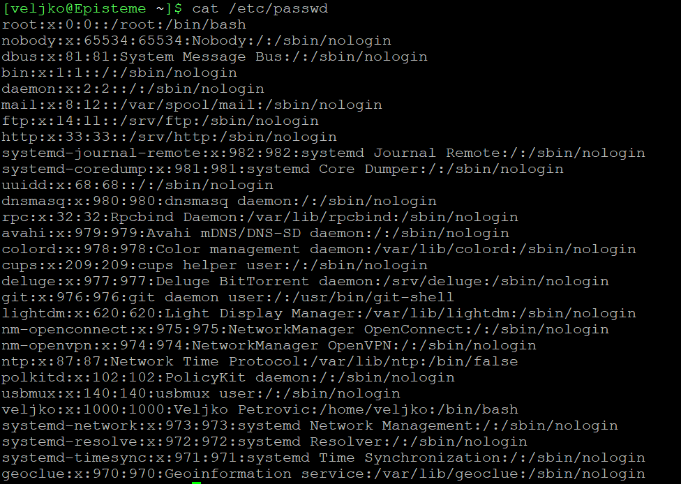
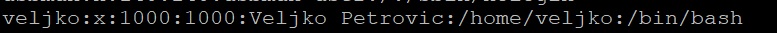

Procesi
Veljko Petrović
2023-06
Sloj za Rukovanje Procesima
O prezentaciji
- Ovo je već pređeno kroz druga predavanja, ali ovo služi kao obnova i sistemarizacija već pređenog
- Tematika jesu procesi u operativnom sistemu: budući da smo ih pomenuli stotinama puta i da smo ih i pravili od nule, sve bi ovo trebalo da bude poznato
Sloj OS za rukovanje procesima
- Osnovni zadaci sloja za rukovanje procesima su:
- stvaranje procesa
- uništenje procesa.
- Stvaranje procesa obuhvata:
- stvaranje slike procesa
- stvaranje deskriptora procesa
- pokretanje aktivnosti procesa
- Uništenje procesa obuhvata:
- zaustavljanje aktivnosti procesa
- uništenje slike procesa
- uništenje deskriptora procesa
Osnovni zadaci sloja za rukovanje procesima
- Pored sistemskih operacija stvaranja i uništenja procesa, potrebne su i sistemske operacije za izmenu atributa procesa, na primer, za izmenu radnog imenika (direktorijuma) procesa.
- Slika procesa obuhvata niz lokacija radne memorije sa uzastopnim
(logičkim) adresama. Ona sadrži:
- izvršavane mašinske naredbe
- promenljive
- stek
Šema rasporeda u memoriji

Raspored u memoriji
- Slika procesa počinje od lokacije radne memorije sa najnižom adresom → mašinske naredbe, a završava na lokaciji radne memorije sa najvišom adresom - stek se puni u smeru nižih adresa
- Iza mašinskih naredbi dolaze statičke promenljive (inicijalizovane, pa neinicijalizovane).
- Između ovih promenljivih i steka se nalazi slobodna radna memorija procesa.
Osnovni zadaci sloja za rukovanje procesima
- Radna memorija procesa je na raspolaganju procesu za:
- širenje (punjenje) steka
- za stvaranje dinamičkih promenljivih (heap)
- Svi dinamički zahtevi za zauzimanjem radne memorije, postavljeni u toku aktivnosti procesa, se zadovoljavaju samo na račun slobodne radne memorije procesa.
- Ovakva organizacija slike procesa uslovljava da proces prvo ugrozi svoju aktivnost, kada njegovi zahtevi za radnom memorijom nadmaše njegovu raspoloživu slobodnu radnu memoriju (preklapanja steka i promenljvih dovodi do fatalnog ishoda po aktivnost procesa)
Osnovni zadaci sloja za rukovanje procesima
- Pored slike, za aktivnost procesa je važan i deskriptor procesa, koji sadrži atribute procesa.
- Ovi atributi karakterišu aktivnost procesa. Oni obuhvataju:
- stanje procesa (“spreman”, “aktivan”, “čeka”)
- sadržaje procesorskih registara (zatečene u njima pre poslednjeg preključivanja procesora sa procesa)
- numeričku oznaku vlasnika procesa
- oznaku procesa stvaraoca
- trenutak pokretanja aktivnosti procesa
Osnovni zadaci sloja za rukovanje procesima
- ukupno trajanje aktivnosti procesa (odnosno, ukupno vreme angažovanja procesora)
- podatke o slici procesa (njenoj veličini i njenom položaju u radnoj i masovnoj memoriji)
- podatke o datotekama koje proces koristi
- podatak o radnom imeniku procesa
- razne podatke neophodne za upravljanje aktivnošću procesa (poput prioriteta procesa ili položaja sistemskog steka procesa, koga koristi operativni sistem u toku obavljanja sistemskih operacija).
Sistemske operacije za stvaranje i uništenje procesa
- Za stvaranje procesa potrebno je pristupiti odgovarajućoj izvršnoj
datoteci sa inicijalnom slikom procesa. Ona sadrži:
- mašinske naredbe
- početne vrednosti statičkih promenljivih
- podatak o veličini delova slike procesa.
- Takođe, potrebno je zauzeti deskriptor procesa, kao i dovoljno veliku zonu radne memorije za sliku procesa.
- Sve ovo spada u nadležnost sistemske operacije stvaranja procesa
(
fork()iexec()). - Ovu operaciju poziva proces stvaralac i ona se obavlja u toku njegove aktivnosti.
Sistemske operacije za stvaranje i uništenje procesa
- U okviru poziva sistemske operacije stvaranja procesa kao argument se navodi putanja odgovarajuće izvršne datoteke.
- Svi atributi stvaranog procesa ne moraju biti navedeni u okviru
poziva sistemske operacije stvaranja procesa, jer se jedan njihov deo
nasleđuje iz deskriptora procesa stvaraoca:
- numerička oznaka vlasnika procesa
- podatak o radnom imeniku procesa
- njegov prioritet
Sistemske operacije za stvaranje i uništenje procesa
- Za uništenje procesa potrebno je osloboditi njegov deskriptor i zonu
radne memorije sa njegovom slikom što spada u nadležnost sistemske
operacije uništenja procesa (
exit()). - Nju automatski poziva proces na kraju svoje aktivnosti, čime izaziva svoje samouništenje.
- Uništenje procesa se završava preključivanjem procesora sa uništavanog na neki od spremnih procesa.
Sistemske operacije za stvaranje i uništenje procesa
- U okviru operacije uništenja procesa uputno je predvideti argument kojim proces saopštava svoje završno stanje, odnosno informaciju da li je aktivnost uništavanog procesa bila uspešna ili ne.
- Da bi proces stvaralac mogao iskoristiti ovakvu povratnu informaciju
od stvorenog procesa, on mora pozivom posebne sistemske operacije
(
wait()) da zatraži zaustavljanje svoje aktivnosti i tako omogući preključivanje procesora na stvarani proces.
Zamena slika procesa
- Swapovanje procesa je procedura gde se (delovi) nekog procesa koji je pokrenut izbacuju iz fizičke memorije zato što se ne smatra da će biti pomenuti: dosta smo o ovome pričali kada smo pričali o paging tehnici i virtuelnoj memoriji.
- U nadležnosti ove operacije zamene (swap) je dugoročno raspoređivanje (long term scheduling), u okviru koga se odabiraju stranice koje se izbacuju i potencijalno (prefetch) ubacuju.
- Važno je uočiti da se dugoročno raspoređivanje razlikuje od običnog ili kratkoročnog raspoređivanja (short term scheduling), koje među spremnim procesima odabira proces na koga se preključuje procesor.
Rukovanje nitima
- Rukovanje nitima može, ali i ne mora, biti u nadležnosti sloja za rukovanje procesima.
- Kada je rukovanje nitima povereno sloju za rukovanje procesima, tada operativni sistem nudi sistemske operacije za rukovanje nitima, koje omogućuju stvaranje, uništavanje i sinhronizaciju niti.
- U ovom slučaju, deskriptori i sistemski stek niti se nalaze u sistemskom prostoru, dok se sopstveni stek niti nalazi u korisničkom prostoru (unutar slike procesa).
Rukovanje nitima
- U slučaju kada rukovanje nitima nije u nadležnosti operativnog sistema, brigu o nitima potpuno preuzima konkurentna biblioteka.
- Pošto ona pripada slici procesa, rukovanje nitima u ovom slučaju se potpuno odvija u korisničkom prostoru, u kome se nalaze i deskriptori niti, kao i stekovi niti.
- Osnovna prednost rukovanja nitima van operativnog sistema (ovo se još zovu i “zelene niti”) je efikasnost, jer su pozivi potprograma konkurentne biblioteke brži (kraći) od poziva sistemskih operacija.
Rukovanje nitima
- Ove niti se ne izvršavaju brže, štaviše tipično se izvršavaju sporije
- Ono što ih čini bržim jeste to što njihovo stvaranje, uništavanje, itd. zahteva manje vremena i memorije
- Generalno pravilo jeste da se sistemske niti koriste kada želite paralelizam, a ne-sistemske preferiraju kada je u pitanju asinhron proces koji obrađuje ulaz i izlaz.
Rukovanje nitima
- Ali, kada operativni sistem ne rukuje nitima, tada poziv blokirajuće sistemske operacije iz jedne niti dovodi do zaustavljanja aktivnosti procesa kome ta nit pripada, jer operativni sistem pripisuje sve pozive sistemskih operacija samo procesima, pošto ne registruje postojanje niti.
- Na taj način se sprečava konkurentnost unutar procesa, jer zaustavljanje aktivnosti procesa sprečava aktivnost njegovih spremnih niti.
- Zato savremeni operativni sistemi podržavaju rukovanje nitima. Tako, u okviru POSIX (Portable Operating System Interface) standarda (IEEE 1003 ili ISO/IEC 9945) postoji deo pthread (POSIX threads) koji je posvećen nitima.
- Ako ipak želimo ne-sistemsko rukovanje onda okruženje koje se koristi mora vrlo pažljivo koristiti (ispod haube) isključivo ne-blokirajuće operacije i uspostavljati preključivanje među nitima koje je efektno.
Osnove komunikacije između procesa
- Komunikacija između procesa može biti, kroz POSIX:
- Signal
- Baferi (Pipe, FIFO, Message Queue)
- Deljena memorija
- Semafori
Signali
- Signali su softverski prekidi koji označavaju da se u sistemu desio nekakav događaj.
- Ponekad ih generišu drugi procesi, ponekad sam operativni sistem, a ponekad korisnik direktno.
- Signali imaju različito značenje
- Može se dobiti kompletna lista iz operativnog sistema
Signali

Reakcija na signale
- Svaki tip signala ima jednu podrazumevanu akciju iz sledećeg skupa:
- Term
- Proces koji dobija signal se terminira.
- Ign
- Proces koji dobija signal ga ignoriše.
- Core
- Podrazumevana akcija jeste da se terminira proces i da se u fajl izbaci sva memorija procesa.
- Stop
- Proces se pauzira.
- Cont
- Proces se nastavi ako je pauziran.
- Term
Namena signala
| Ime signala | Broj signala | Reakcija | Svrha |
|---|---|---|---|
| SIGTERM | 15 | Term | Signal za terminaciju |
| SIGUSR1 | 10 | Term | Rezervisan za korisnika. |
| SIGUSR2 | 12 | Term | Rezervisan za korisnika. |
| SIGCHLD | 17 | Ign | Dete-proces je prekinut. |
| SIGCONT | 18 | Cont | Nastavi izvršavanje. |
| SIGSTOP | 19 | Stop | Pauziraj izvršavanje. |
| SIGSTP | 20 | Stop | Pauziraj izvršavanje (pokrenut sa terminala) |
Namena signala
| Ime signala | Broj signala | Reakcija | Svrha |
|---|---|---|---|
| SIGBUS | 7 | Core | Greška magistrale |
| SIGPOLL | 29 | Term | Sinonim za SIGIO |
| SIGPROF | 27 | Term | Tajmer za profiliranje je istekao |
| SIGSYS | 31 | Core | Greška u sistemskom pozivu. |
| SIGTRAP | 5 | Core | Breakpoint dostignut. |
| SIGURG | 23 | Ign | Hitna reakcija na socket-u. |
| ISGVTALRM | 26 | Term | Virtualni alarm |
Namena signala
| Ime signala | Broj signala | Reakcija | Svrha |
|---|---|---|---|
| SIGIOT | 6 | Core | Isto što i SIGABRT. |
| SIGIO | 29 | Term | I/O sada moguć. |
| SIGPWR | 30 | Term | Greška sa napajanjem. |
| SIGTTIN | 21 | Stop | Komunikacija sa terminalom za poz. proces |
| SIGTTOU | 22 | Stop | Komunikacija sa terminalom za poz. proces |
| SIGXCPU | 24 | Core | Potrošeno svo CPU vreme. |
| SIGXFSZ | 25 | Core | Potrošeno ograničenje veličine fajla. |
Slanje signala

Slanje signala

Slanje signala
Reagovanje na signal
Reagovanje na signal
Baferi
- Bafer je opšte ime za nekoliko metoda za komunikaciju.
- Ovde ćemo pogledati malo bolje ‘pipe’ i ‘fifo’ mehanizam koji funkcioniše kao fajl koji, kad se napravi, ima dva deskriptora: iz jednog se čita, a u drugi piše.
- Više procesa može da deli ove, sa tim da ako jedan piše, drugi ne može. To se rešava tako što svaki proces zatvori ono što nije neophodno.
- Pipe živi koliko i jedan proces, FIFO je permanentan i ima ime.
Pipe—Include
Pipe Main
Pipe Main
Pipe—Dete proces
Pipe—Roditelj proces
FIFO
- FIFO je apsolutno identičan Pipe mehanizmu sa tom razlikom da ima ime i postojanje koje je nezavisno u odnosu na proces koji ga stvara.
- FIFO uvek postoji negde na disku, tj. ima putanju. Mora se napraviti
tako što se otkuca
mknod IME p
Deljena memorija
- Deljenu memoriju više proučavamo kroz kod, ali ideja je jednostavna: definišemo region memorije koji dele dva procesa, i komuniciramo kroz njega.
- Jako je brzo, ali su problemi sinhronizacije poprilični.
Sistemski Procesi
Sistemski procesi – nulti proces
- Nulti proces je kao baš i nulta nit: služi da bi uvek bilo nešto što može da se izvrši, večno ili aktivno ili spremno.
- Njegov prioritet je niži od prioriteta svih ostalih procesa, a on postoji za sve vreme aktivnosti operativnog sistema.
Sistemski procesi – dugoročni raspoređivač
- Drugi primer sistemskog procesa je proces dugoročni raspoređivač, koji se brine o tome koje su stranice u radnoj memoriji
- On se periodično aktivira
- Da bi se proces uspavao, odnosno da bi se njegova aktivnost zaustavila do nastupanja zadanog trenutka, on poziva odgovarajuću sistemsku operaciju.
- Ona pripada sloju za rukovanje kontrolerima, jer proticanje vremena registruje drajver sata.
- I proces dugoročni raspoređivač postoji za sve vreme aktivnosti operativnog sistema (jasno, ako ima potrebe za dugoročnim raspoređivanjem).
Sistemski procesi – procesi identifikator i komunikator
- U sistemske procese spada i proces identifikator (login process), koji podržava predstavljanje korisnika.
- Proces identifikator koristi terminal, da bi posredstvom njega stupio u interakciju sa korisnikom u toku predstavljanja, radi preuzimanja imena i lozinke korisnika.
- Po preuzimanju imena i lozinke, proces identifikator proverava njihovu ispravnost i, ako je prepoznao korisnika, tada stvara proces komunikator, koji nastavlja interakciju sa korisnikom.
Identifikator i komunikator
- Moderni računari imaju proces identifikator koji je grafički i radi dodatne poslove, rečimo pokreće grafički shell, ali je princip isti: mora se ustanoviti identitet korisnika.
- Proces komunikator je, naravno, shell: nešto što zahteve korisnika pretvori u operacije operativnog sistema.
Sistemski procesi – procesi identifikator i komunikator
- Za proveru ispravnosti imena i lozinke korisnika, neophodno je raspolagati spiskovima imena i lozinki registrovanih korisnika.
- Ovi spiskovi se čuvaju u posebnoj datoteci lozinki (password file).
- Svaki slog ove datoteke sadrži:
- ime i lozinku korisnika
- numeričku oznaku korisnika
- putanju radnog imenika korisnika
- putanju izvršne datoteke, sa inicijalnom slikom korisničkog procesa komunikatora
- Nekada se lozinke korisnika čuvaju u posebnoj datoteci (shadow file).
/etc/passwd

/etc/passwd

Sistemski procesi – procesi identifikator i komunikator
- Za zaštitu datoteka ključno je onemogućiti neovlaštene pristupe datoteci lozinki.
- Prirodno je da njen vlasnik bude administrator i da jedino sebi dodeli pravo čitanja i pisanja ove datoteke.
- Pošto su procesi identifikatori sistemski procesi, koji nastaju pri pokretanju operativnog sistema, nema prepreke da njihov vlasnik bude administrator.
- Iako na taj način procesi identifikatori dobijaju i pravo čitanja i pravo pisanja datoteke lozinki, to pravo korisnici ne mogu da zloupotrebe, jer, posredstvom procesa identifikatora, jedino mogu proveriti da li su registrovani u datoteci lozinki.
- Pri tome je bitno da svoja prava proces identifikator ne prenosi na proces komunikator. Zato proces komunikator ne nasleđuje numeričku oznaku vlasnika od svog stvaraoca procesa identifikatora.
Sistemski procesi – procesi identifikator i komunikator
- Administrator bez problema pristupa datoteci lozinki, radi izmene njenog sadržaja, jer je on vlasnik svih procesa, koje je stvorio i pokrenuo da bi izvršili njegove komande.
- Pošto korisnici nemaju načina da pristupe datoteci lozinki, javlja se problem kako omogućiti korisniku da sam izmeni svoju lozinku.
- Taj problem se može rešiti po uzoru na proces identifikator, koga koriste svi korisnici, iako nisu njegovi vlasnici.
- Prema tome, ako je administrator vlasnik izvršne datoteke sa inicijalnom slikom procesa za izmenu lozinki, dovoljno je naznačiti da on treba da bude vlasnik i procesa nastalog na osnovu ove izvršne datoteke (SUID - Switch User IDentification program).
Sistemski procesi – procesi identifikator i komunikator
- Datoteka lozinki je dodatno zaštićena, ako su lozinke u nju upisane u izmenjenom, odnosno u kriptovanom (encrypted) obliku, jer tada administrator može da posmatra sadržaj datoteke lozinki na ekranu, ili da ga štampa, bez straha da to može biti zloupotrebljeno.
- Da bi se sprečilo pogađanje tuđih lozinki, proces identifikator treba da reaguje na više uzastopnih neuspešnih pokušaja predstavljanja, obaveštavajući o tome administratora, ili odbijajući neko vreme da prihvati nove pokušaje predstavljanja.
- Takođe, korisnici moraju biti oprezni da sami ne odaju svoju lozinku lažnom procesu identifikatoru. To se može desiti, ako se njihov prethodnik ne odjavi, nego ostavi svoj proces da opslužuje terminal, oponašajući proces identifikator.
Kriptografija
Umetnost primenjene paranoje
Istorija kriptografije
- Od starogrčkog: κρυπτός (skrivena) i λόγος (reč)
- Sa tim je povezan i termin ‘šifra’ odn. engleski ‘cypher’ ili ‘cipher’
- Cipher/šifra dolaze od arapskog ‘al sifr’ što znači nula.
- Zašto? Zato što su srednjevekovni Evropljani imali sujeveran strah od nule kao koncepta.
Istorija kriptografije
- Najranije forme su stvari kao što je Cezarova šifra čiji je moderan ekvivalent rot13.
- Šta je problem? Ako znam algoritam, znam da provalim šta je šifra. Jedini parametar cezarove šifre je za koliko mesta pomeramo azbuku, budući da je to 26 mogućih vrednosti odn. ni 5 bita bezbednosti za brute-force, to i nije nekakva zaštita.
Istorija kriptografije
- Možemo to i bolje, uzmite Polibijev Kvadrat.
- To je već 25! mogućih varijacija, odn. 15511210043330985984000000 mogućih ključeva. To je skoro 84 bita bezbednosti. Mnogo bolje.
- Uprkos tome, mogli bi ste da potpuno razbijete bilo koji Polibijev Kvadrat bez puno napora.
- Zašto? Informacije cure kroz distribuciju slova, u engleskom, na primer, najčešćih prvih 12 slova su, redom, ETAOIN SHRDLU. Ovo je osobina koju Polibijev kvadrat uopšte ne krije.
Šenonovi kriterijumi i šta čini dobar metod šifrovanja
- Konfuzija
- Svaki bit šifrovanog izlaza mora zavisiti od više bitova ključa
- Difuzija
- Izmena od jednog bita ulatnog, nešifrovanog teksta, bi trebalo da ima matematičko očekivanje da će se izmeniti pola bitova šifrovanog izlaza.
Istorijski, ovo nam i nije najbolje išlo
- Prvi pokušaj da se to ispravi jesu polialfabetske šifre: prvo slovo menjamo po prvoj azbuci zamene, drugo po drugoj itd. Nije baš radilo zbog napada preko dekompozicije.
- Drugi pokušaj? Kontinualno kližuća azbuka preko rotora.
- Ovo može da bude prilično bezbedno, čak i danas. RC4 je rotorska šifra. Čak postoje moderno-bezbedni algoritmi koji se mogu raditi rukom kao što je Šajnerov ‘pasijans’ algoritam.
- No, lako je napraviti grešku — primer Enigme.
Da li postoji savršena šifra?
- Da! Od 1882, štaviše!
- U pitanju je tkzv ‘jednostruka zamena’ odn. ‘one-time pad’
- Problem?
- Trebaju nam stvarno slučajni brojevi
- Treba nam razmena ključa velikog koliko i poruka sa savršenom bezbednošću. To je… problematično, jer ako već imao sigurni kanal komunikacije, što šifrovati?
O slučajnim brojevima
- Generacija slučajnih brojeva je apsolutno ključna za efektnu kriptografiju, ne samo za jednostruke zamene.
- Da stvar bude zanimljivija, to je funkcionalnost koju baš očekujemo od operativnog sistema.
- Ipak, to su samo slučajni brojevi… koliko teško to može biti?
Veoma
O slučajnim brojevima
Anyone who considered arithmetical methods of producing random digits is, of course, in a state of sin. —John von Neumann, General-Purpose Genius
O slučajnim brojevima
Random number generation is too important to be left to chance. —Robert Coveyou, Oak Ridge National Laboratory
Pseudo-slučajni brojevi
- Računari su determinističke mašine. Kao takve ne mogu da stvaraju slučajne brojeve.
- Sa druge strane mogu da stvaraju pseudo slučajne brojeve, odn. niz nepredvidivih vrednosti koje su takve da ako znaš proizvoljno mnogo slučajnih brojeva i dalje ne možeš da predvidiš sledeću.
- Da bi ovo radilo potreban je odličan algoritam koji se mora na početku nahraniti sa malo istinske slučajnosti: izvorom entropije. Ovo je ograničen, dragocen resurs.
Linux
- /dev/random je kako Linux pokušava da nam ovde pomogne: to je izvor kvalitetne entropije koji se formira na osnovu šuma sa sistemske magistrale.
- Ovo je odličan izvor ali se lako isprazni, a ako se to desi pokušaj da se pozove ‘read’ na tome će blokirati dok ne dobijemo svežu entropiju što zahteva jako puno vremena.
- Ovo je napadačka površina za DDOS iscrpljivanjem entropije.
Linux
- /dev/urandom nikada ne blokira, ali su brojevi generisani algoritmom.
- Srećom, to je barem jako kvalitetan algoritam, barem od verzije 4.8.
Hardverski generatori slučajnih brojeva
- Za jako bitne primene postoje hardverski generatori bazirani na, npr, atmosferskom šumu ili, najčešće, kvantno-mehanički procesi kao što je raspad nuklearnih izotopa. Ovo je skupo i nezgodno, budući da niko ne želi radio-izotop na svojoj matičnoj ploči.
- Intel nudi rešenje: svaki Ivy Bridge i kasniji procesor ima na čipu RDRAND instrukciju koja proizvodi hardverski-generisane (rezistivan šum) slučajne brojeve.
Intel nudi problem
- Prvi problem: Bezbednosno ključni mehanizam je sada (bukvalno) crna kutija iz koje izlaze bitovi, bez načina da se uverimo da se prave na pravi način.
- Gore, mnogo gore od toga, jeste da je RDRAND implementacija… podešena od strane NSA.
- NSA je permanentan protivnik kvalitetne kriptografije. Već se zna da su ključne NIST konstante manipulisane.
Šta hoćemo od moderne kriptografije?
- Poverljivost
- Integritet
- Identitet
Kripto-sistem
- Kripto-sistem je mehanizam koji postiže jedan od prethodnih ciljeva, najčešće sva tri, i sastoji se od protokola slanja, primanja, verifikacije poruka između nekog broja učesnika u nekom redosledu.
- Kripto-sistemi se grade od kripto-primitiva, bazičnih matematičkih konstrukta koji nam omogućavaju da operišemo.
Kripto-primitivi
- Jednosmerne, heš, funkcije.
- Simetrična, tajni-ključ, enkripcija.
- Asimetrična, javni-ključ, enkripcija.
Heš funkcije
- Kriptografske
- HMAC
- Lozinka
- KDF
- Opšte
- Verifikacija
- Adresiranje
Kriptografska heš funkcija
- Neka funkcija \(H\) je kriptografski heš ako je komputaciono izuzetno skupo da:
- Za neku vrednost h naći ulaz i takav da \(H(i) = h\)
- Za neki ulaz i naći drugi ulaz j takav da \(H(i) = H(j)\)
- Naći bilo koja dva ulaza i i j takva da \(H(i) = H(j)\)
Moderne kriptografske heš funkcije
- SHA-2 i SHA-3 i koncept kripto-agilnosti.
- Šta je problem sa SHA-2, današnjom najčešće korišćenom heš
funkcijom?
- Kletva NSA
- Izuzetna efikasnost implementacije
- Delimični napadi
- Napad povećanjem dužine
Napad sa povećanjem dužine
Funkcije porodice SHA - 2, tj.svih koje koriste tkzv.Merkle-Damgard konstrukciju kao svoju osnovu imaju slabost gde ako znamo \(H(M_1)\) i dužinu \(M_1\) onda možemo da izračunamo \(H(M_1 || M_2)\) za proizvoljni \(M_2\) gde je \(||\) operator konkatenacije.
Alternativne Heš Funkcije i Heš Funkcije Posebne Namene
- Blake2b (Opšta kriptografska)
- SipHash (Štiti od DDOS potencijala malicioznih kolizija u okviru MurmurHash3)
- Argon2 (Šifre i KDF)
Simetrični algoritmi
- Imamo deljenu tajnu između dve strane koje tajno komuniciraju.
- Bezbednost zavisi 100% of toga da je ta tajna deljena a za druge tajna. Ta tajna se obično zove ‘tajni ključ’ ili samo ‘ključ’
- Simetrični algoritmi mogu raditi na blokovima ili na tokovima.
- Algoritmi na tokovima rade kao jednostruka zamena, samo što postoji algoritam koji generiše ‘blokče’ koje koristimo. Jako moćan sistem, ali jako osetljiv na periodičnost i početna podešavanja.
ChaCha
- Tačnije, ChaCha20: algoritam toka
- Koristi je interno Google, OpenSSH polako prelazi na ChaCha, proizvodi CSPRNG za Linux od 4.8 (simetrični algoritmi enkripcije su takođe dobri generatori PRN-ova)
- Jedini ulaz su podaci i nonce.
Nonce?
- Number used ONCE.
- Veliki broj algoritama za enkripciju zahteva neki početni broj koji se apsolutno ne sme ponovo koristiti.
- Veliki broj naizgled kompetentnih programera ponovo upotrebi Nonce ili IV i dobije se debakl kao što je DRM za PS3.
Blok-šifre
- Rade na blokovima fiksne dužine.
- Trik kod njih su lukavo složene operacije mešanja i zamene nad ulaznim podacima na način koji tajni ključ parametrizuje.
- Ideal je da se postigne efekat lavine—svaki bit izlaza zavisi od svakog bita ulaza.
AES
- Izuzetno dobar standard za simetričnu enkripciju, naročito AES-256.
- Postoje kvalitetne hardverske implementacije.
- Ali, AES takođe ima mračnu stranu: strašno je lako upucati se u nogu kada se koristi. Zašto? Zato što simetrične šifre enkriptuju jedan jedini blok i to je to.
- Ako hoćemo više (hoćemo) treba nam operativni mod AES-a, a tu problemi nastaju.
Operativni Modovi i IV
- IV je kao nonce ali sa sledećim osobinama:
- Može biti javan
- Ne sme da se ponavlja
- Ne sme da bude predvidiv
Zamka ECB
- Trivijalan način da se AES primeni na više podataka jeste da se podaci podele na blokove i ista operacija izvrši na svakom bloku.
- Ovo se zove Electronic Code Book
- To vam je čak i ponuđeno u nekim implementacijama.
- Ovo je kataklizmično loša ideja.
ECB primenjen na slici - Original

ECB primenjen na slici - Enkriptovana slika

Brojački režimi
- Bezbedan režim za upotrebu AES-a ovih dana jeste da se, efektivno, pretvori u sistem za enkripciju preko toka, tako što se tok generiše kroz AES nad nekakvim brojačem koji se dodaje (ne aritmetički) na IV.
- Današnji state-of-the-art je AES-GCM
Asimetrična kriptografija
- Simterična kriptografija nije podesna za kriptovanje poruka, jer tada ključ kriptovanja mora znati svaki pošiljalac poruke, što ga dovodi u poziciju da može da dekriptuje poruke drugih pošiljalaca.
- To nije moguće u asimetričnoj kriptografiji (public-key cryptography), jer je njena osobina da se iz ključa kriptovanja ne može odrediti ključ dekriptovanja, pa poznavanje ključa kriptovanja ne omogućuje dekriptovanje.
- Ovakav ključ kriptovanja se zove javni ključ (public key), jer je on dostupan svima.
Asimetrična kriptografija
- Njemu odgovarajući ključ dekriptovanja je privatan (tajan), jer je dostupan samo osobama ovlašćenim za dekriptovanje. Zato se on naziva privatni ključ (private key).
- Prema tome, svaki pošiljalac poruke raspolaže javnim ključem, da bi mogao da kriptuje poruke, dok privatni ključ poseduje samo primalac poruka, da bi jedini mogao da dekriptuje poruke.
- Asimetrična kriptografija se temelji na korišćenju jednostavnih algoritama kriptovanja kojima odgovaraju komplikovani algoritmi dekriptovanja.
Asimetrična kriptografija
- Zato je asimterična kriptografija mnogo sporija od simetrične.
- Obično se asimetrična kriptografija koristi samo za razmenu ključeva potrebnih za simetričnu kriptografiju, pomoću koje se, zatim, kriptuju i dekriptuju poruke.
Pitanja
Pitanja
- Čime se bavi sigurnost?
- Šta omogućuju sistemske opercije za rukovanje procesima?
- Šta obuhvata stvaranje procesa?
- Šta obuhvata uništenje procesa?
- Šta sadrži slika procesa?
- Za šta se koristi slobodna radna memorije procesa?
Pitanja
- Koji atributi procesa postoje?
- Koje sistemske operacije za rukovanje procesima postoje?
- Koji se atributi nasleđuju od procesa stvaraoca prilikom stvaranja procesa?
- Koji se atributi procesa nastanu prilikom njegovog stvaranja?
- Šta karakteriše kopiju slike procesa?
- Koje raspoređivanje je vezano za zamenu slika/stranica procesa?
Pitanja
- Šta karakteriše rukovanje nitima unutar operativnog sistema?
- Šta karakteriše rukovanje nitima van operativnog sistema?
- Šta karakteriše nulti proces?
- Šta je karakteristično za proces dugoročni raspoređivač?
- Šta radi proces identifikator?
- Ko stvara proces komunikator?
Pitanja
- Šta označava SUID (switch user identification)?
- Šta karakteriše heš (hash/jednosmernu) funkciju?
- Šta karakteriše simetričnu kriptografiju?
- Šta karakteriše asimetričnu kriptografiju?
- Na čemu se temelji tajnost kriptovanja?